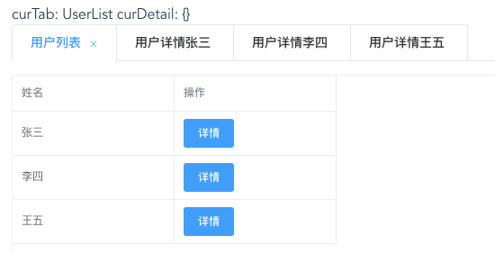

2020/08/30
Author: guoqzuo
vue + element实现在用户列表页同时打开多个用户详情页tab功能
在使用el-tabs时，如果涉及到同组件会打开多个tab的情况，同组件切换需要使用watch来监听数据改变，再进行数据的初始化
下面结合一个实例来看看，使用 vue + elementUI 实现在用户列表页同时打开多个用户详情页tab功能

目录结果如下
sameCompTabs
├── comps
│ ├── UserDetail.vue # 用户详情组件
│ └── UserList.vue # 用户列表组件
└── index.vue # 入口页，el-tabs页面tabs入口页
index.vue
<template>
<div class="same-comp-tabs">
curTab: {{ curTab }} curDetail: {{ curUserDetail }}
<el-tabs v-model="curTab" type="card" closable @tab-remove="tabRemove">
<el-tab-pane
v-for="item in tabList"
:key="item.name"
:label="item.title"
:name="item.name"
>
</el-tab-pane>
</el-tabs>
<keep-alive>
<component
:is="curComp"
:detail="curUserDetail"
@open-detail="openDetail"
></component>
</keep-alive>
</div>
</template>
<script>
export default {
components: {
UserList: () => import("./comps/UserList"),
UserDetail: () => import("./comps/UserDetail")
},
computed: {
curComp() {
return this.curTab.split("|")[0];
},
curUserDetail() {
for (let i = 0, len = this.tabList.length; i < len; i++) {
let item = this.tabList[i];
// console.log("item", item);
if (item.name === this.curTab && item.name.includes("UserDetail")) {
return item.detail;
}
}
return {};
}
},
data() {
return {
curTab: "UserList", // v-model的值为el-tab-pane name值
tabList: [
{
title: "用户列表",
name: "UserList"
}
]
};
},
methods: {
openDetail(detail) {
console.log("open detail in index.vue", JSON.stringify(detail));
let name = `UserDetail|${detail.id}`;
this.curTab = name;
// 之前打开过
if (this.tabList.some(item => item.name === name)) {
return;
}
this.tabList.push({
title: "用户详情" + detail.name,
name,
detail
});
},
tabRemove(name) {
console.log("remove name", name);
if (["UserList"].includes(name)) {
return;
}
this.tabList = this.tabList.filter(item => item.name !== name);
this.curTab = "UserList";
}
}
};
</script>
<style lang="less" scoped>
.same-comp-tabs {
padding: 20px;
}
</style>
用户列表组件
UserList.vue
<template>
<div>
<el-table
:data="tableData"
size="small"
height="250"
border
style="width: 100%"
>
<el-table-column prop="name" label="姓名" width="180"></el-table-column>
<el-table-column label="操作" width="180">
<template v-slot:default="scope">
<el-button type="primary" size="small" @click="openDetail(scope.row)">
详情
</el-button>
</template>
</el-table-column>
</el-table>
</div>
</template>
<script>
export default {
data() {
return {
tableData: [
{ name: "张三", id: "zhangsan" },
{ name: "李四", id: "lisi" },
{ name: "王五", id: "wangwu" }
]
};
},
methods: {
openDetail(detail) {
console.log(JSON.stringify(detail, null, 2));
this.$emit("open-detail", detail);
}
}
};
</script>
<style></style>
用户详情组件
UserDetail.vue
<template>
<!-- 用户详情页 -->
<div>
<h1>用户详情页</h1>
<div>userId: {{ detail.id }} userDetail: {{ userDetail }}</div>
</div>
</template>
<script>
export default {
props: ["detail"],
data() {
return {
userDetail: {}
};
},
created() {
console.log("create");
this.getDetailById();
},
methods: {
getDetailById() {
console.log("get detail by id", this.detail.id);
this.userDetail = {
id: this.detail.id
};
}
},
// 同组件之间的切换
watch: {
detail: {
handler: function(val, oldVal) {
console.log(
"detail change",
JSON.stringify(val),
JSON.stringify(oldVal)
);
this.getDetailById();
},
deep: true
}
}
};
</script>
<style></style>
完整demo地址：用户列表打开多个用户详情demo | github